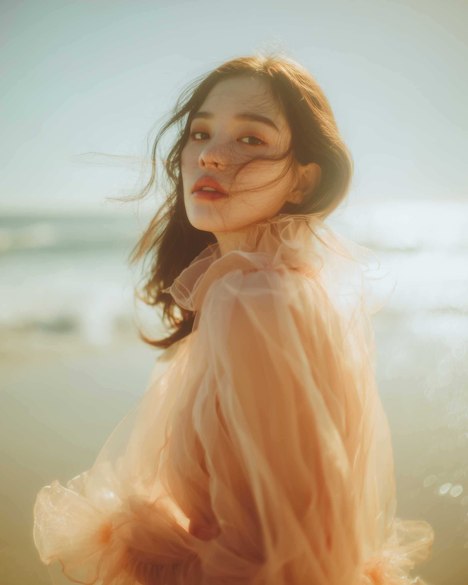
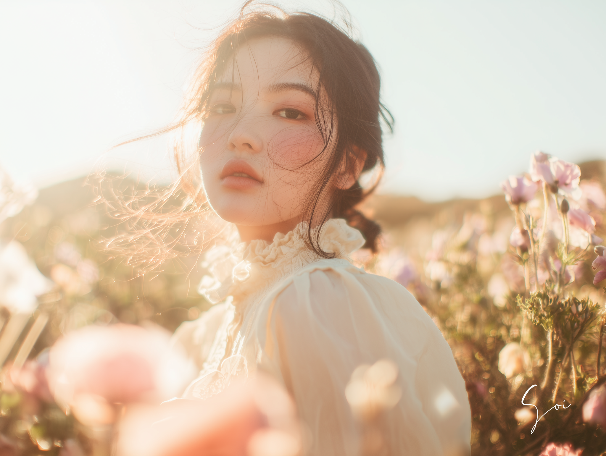
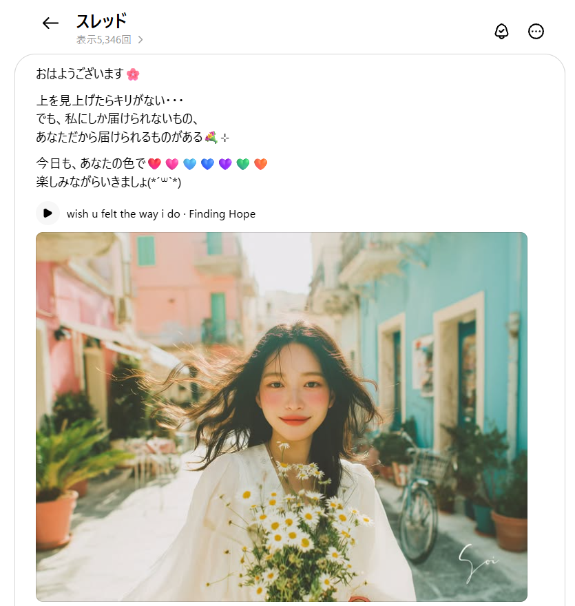

<title>「好き」から見つける、自分だけの世界観｜そい</title>
<meta name="description" content="センスがあるとも思っていなかった。世界観が何かも分からなかった。それでも「好き」「違う」「こっちかも」を繰り返しながら、少しずつ自分を知っていった話。">

<link rel="preconnect" href="https://fonts.googleapis.com">
<link rel="preconnect" href="https://fonts.gstatic.com" crossorigin>
<link href="https://fonts.googleapis.com/css2?family=Shippori+Mincho:wght@500;600;700&family=Zen+Kaku+Gothic+New:wght@400;500;700&family=Cormorant+Garamond:ital,wght@0,500;1,500&display=swap" rel="stylesheet">

<style>
/* =========================================================
   0. トークン（デザインの骨格はそのまま踏襲）
   ========================================================= */
:root{
  --ivory:     #faf7f3;
  --cream:     #f3ece4;
  --blush:     #f4e3e0;
  --sky:       #eef2f6;
  --dusty-blue:#aebccb;
  --charcoal:  #15100d;
  --ink:       #211a16;
  --ink-soft:  #6b5f58;
  --rose:      #c98a92;
  --rose-deep: #a9646e;
  --rose-ink:  #8e4c57;
  --line:      #e4dcd3;

  --mincho: "Shippori Mincho","Hiragino Mincho ProN","Yu Mincho",serif;
  --gothic: "Zen Kaku Gothic New","Hiragino Sans","Hiragino Kaku Gothic ProN",sans-serif;
  --en:     "Cormorant Garamond","EB Garamond",serif;

  --pad: clamp(1.25rem, 6vw, 5.5rem);
}

*,*::before,*::after{ box-sizing:border-box; }
html{ scroll-behavior:smooth; -webkit-text-size-adjust:100%; }
body{
  margin:0; background:var(--ivory); color:var(--ink);
  font-family:var(--gothic); line-height:1.9; letter-spacing:.02em;
  -webkit-font-smoothing:antialiased; overflow-x:hidden;
}
h1,h2,h3,p,ul,ol,figure{ margin:0; padding:0; }
ul,ol{ list-style:none; }
img,video{ max-width:100%; display:block; }
a{ color:inherit; }
:focus-visible{ outline:2px solid var(--rose-deep); outline-offset:3px; }

.wrap{ max-width:900px; margin-inline:auto; padding-inline:var(--pad); }
.wrap--narrow{ max-width:680px; }

/* PC幅で意味の途中に強制改行が入るのを防ぐための最小限の横幅調整。
   .wrap の内側パディング分だけ、その要素だけ左右に広げる（余白・デザインは変えない）。 */
@media (min-width:900px){
  .bleed-pad{ margin-inline:calc(-1 * var(--pad) - 6rem); padding-inline:1rem; max-width:none; }
}

/* =========================================================
   1. 共通パーツ
   ========================================================= */
.eyebrow{ font-family:var(--en); font-style:italic; font-weight:500; font-size:14px; letter-spacing:.26em; text-transform:uppercase; color:var(--rose-ink); }
.section{ padding-block:clamp(4.5rem, 11vw, 7.5rem); }
.section--sand{ background:var(--cream); }
.section--blush{ background:linear-gradient(160deg, var(--blush), var(--ivory) 65%); }
.section--charcoal{ background:var(--charcoal); color:var(--ivory); }
.section--tight{ padding-block:clamp(3rem,7vw,4.5rem); }

.statement{ font-family:var(--mincho); font-weight:600; line-height:1.55; letter-spacing:.02em; text-wrap:balance; }
.statement--xl{ font-size:clamp(1.9rem, 1.2rem + 3.4vw, 3.6rem); }
.statement--lg{ font-size:clamp(1.5rem, 1.1rem + 2vw, 2.4rem); }
.statement--md{ font-size:clamp(1.2rem, 1.02rem + 1vw, 1.55rem); }
.accent{ color:var(--rose-deep); }
.section--charcoal .statement{ color:var(--ivory); }

.body-text{ font-size:clamp(1rem, .95rem + .3vw, 1.125rem); line-height:2; color:var(--ink-soft); max-width:34em; text-wrap:pretty; }
.section--charcoal .body-text{ color:rgba(250,247,243,.75); }

.reveal{ opacity:0; transform:translateY(16px); transition:opacity .9s cubic-bezier(.22,.61,.36,1), transform .9s cubic-bezier(.22,.61,.36,1); }
.reveal-on .reveal.is-in{ opacity:1; transform:none; }
.reveal-d1.is-in{ transition-delay:.12s; }
.reveal-d2.is-in{ transition-delay:.24s; }

/* =========================================================
   2. 全面AIアート／動画（挿絵扱いにしない）
   ========================================================= */
.media{ background:linear-gradient(150deg, var(--blush) 0%, var(--sky) 55%, var(--dusty-blue) 150%); }
.media img, .media video{ width:100%; height:100%; object-fit:cover; }
.media.is-placeholder img, .media.is-placeholder video{ display:none; }
.media.is-placeholder::after{
  content:attr(data-label); position:absolute; left:20px; bottom:16px;
  padding:.45em .9em; background:rgba(255,255,255,.55); border-radius:2px;
  font-family:var(--en); font-style:italic; font-size:12px; letter-spacing:.14em; color:rgba(30,25,22,.55); text-transform:uppercase;
}

.stage{ position:relative; min-height:88svh; display:flex; align-items:flex-end; overflow:hidden; }
.stage .media{ position:absolute; inset:0; }
.stage .veil{ position:absolute; inset:0; background:linear-gradient(0deg, rgba(21,16,13,.8) 0%, rgba(21,16,13,.25) 45%, transparent 72%); }
.stage__inner{ position:relative; z-index:2; padding:0 var(--pad) clamp(3rem,8vw,4.5rem); width:100%; text-align:left; }
.stage__whisper{ font-family:var(--mincho); font-weight:500; color:var(--ivory); font-size:clamp(1.3rem,1.05rem+1.2vw,1.9rem); line-height:1.8; }
.stage__caption{ margin-top:1rem; color:rgba(250,247,243,.7); font-size:.95rem; }
.stage--center{ align-items:center; justify-content:center; text-align:center; }
.stage--center .stage__inner{ text-align:center; }

.art-full{ position:relative; margin-block:clamp(3rem,7vw,4.5rem); left:50%; right:50%; margin-left:-50vw; margin-right:-50vw; width:100vw; min-height:72vh; overflow:hidden; }
.art-full .media{ position:absolute; inset:0; }
.art-full .veil{ position:absolute; inset:0; background:linear-gradient(0deg, rgba(21,16,13,.5) 0%, transparent 45%); }
.art-full__cap{ position:relative; z-index:2; padding:clamp(1.5rem,5vw,2.5rem); color:var(--ivory); font-family:var(--mincho); font-size:clamp(1.1rem,1rem+.6vw,1.4rem); }

/* =========================================================
   3. 生の声（散らす。カード化しない）
   ========================================================= */
.voices{ margin-top:2.5rem; display:flex; flex-direction:column; gap:1.1rem; }
.voices li{ font-family:var(--mincho); font-size:clamp(1rem,.92rem+.5vw,1.2rem); color:var(--ink-soft); line-height:1.8; padding-left:1.3em; position:relative; text-wrap:pretty; }
.voices li::before{ content:"—"; position:absolute; left:0; color:var(--rose); }

/* =========================================================
   4. 選び続けた痕跡（フィルムストリップ風）
   ========================================================= */
.choosing-words{ display:grid; gap:.9rem; margin:2rem 0; }
.choosing-words span{ display:block; font-family:var(--mincho); font-weight:600; font-size:clamp(1.6rem,1.2rem+2.2vw,2.6rem); }
.choosing-words .w-yes{ color:var(--rose-deep); }
.choosing-words .w-no{ color:var(--ink-soft); font-weight:500; }
.choosing-words .w-final{ color:var(--ink); }

.progression{ display:flex; align-items:flex-start; gap:0 .5rem; margin-top:2rem; flex-wrap:wrap; }
.progression__item{ flex:1 1 130px; display:flex; flex-direction:column; gap:.75rem; }
.progression__item .media{ width:100%; aspect-ratio:3/4; position:relative; overflow:hidden; }
.progression__item .media::after{ font-size:10px !important; left:8px !important; bottom:8px !important; padding:.3em .6em !important; }
.progression__cap{ font-size:.82rem; line-height:1.7; color:var(--ink-soft); text-wrap:balance; }
.progression__arrow{ flex:0 0 auto; align-self:center; margin-top:clamp(2.5rem,15vw,3.2rem); color:var(--ink-soft); font-size:.9rem; }
@media (max-width:640px){
  .progression{ flex-direction:column; }
  .progression__item{ flex-direction:row; align-items:center; }
  .progression__item .media{ width:88px; flex:0 0 88px; }
  .progression__arrow{ align-self:flex-start; margin:.25rem 0 .25rem 43px; transform:rotate(90deg); }
}

/* =========================================================
   5. 問い（参加者が立ち止まる場所）
   ========================================================= */
.ask{ margin-top:clamp(2.5rem,6vw,3.5rem); padding:clamp(1.75rem,5vw,2.5rem); border:1px solid var(--line); border-radius:4px; background:var(--ivory); }
.section--sand .ask, .section--blush .ask{ background:rgba(255,255,255,.6); }
.section--charcoal .ask{ border-color:rgba(250,247,243,.2); background:rgba(250,247,243,.04); }
.ask__label{ font-size:13px; letter-spacing:.1em; color:var(--rose-ink); margin-bottom:.75rem; }
.section--charcoal .ask__label{ color:var(--rose); }
.ask__q{ font-family:var(--mincho); font-weight:500; font-size:clamp(1.1rem,1rem+.5vw,1.4rem); line-height:1.7; }
.ask__hint{ margin-top:.9rem; font-size:.9rem; color:var(--ink-soft); text-wrap:pretty; }

/* =========================================================
   6. 地図（09だけで使う。振り返り用の図解）
   ========================================================= */
.flowmap{ margin-top:2.5rem; text-align:center; }
.flowmap__node{ font-family:var(--mincho); font-weight:600; font-size:clamp(1.05rem,1rem+.4vw,1.3rem); display:inline-block; }
.flowmap__node--core{ color:var(--rose-ink); }
.flowmap__node--final{ font-size:clamp(1.6rem,1.3rem+1.5vw,2.2rem); color:var(--rose-deep); }
.flowmap__arrow{ color:var(--ink-soft); font-size:.95rem; margin-block:.5rem; }
.flowmap__branch{ display:grid; grid-template-columns:repeat(2,1fr); gap:1rem 1.5rem; max-width:520px; margin:1rem auto; }
.flowmap__branchItem{ padding:1rem 0; border-top:1px solid var(--line); display:flex; flex-direction:column; gap:.25rem; }
.flowmap__en{ font-family:var(--en); font-style:italic; font-size:13px; letter-spacing:.14em; color:var(--rose-ink); }
.flowmap__jp{ font-size:.95rem; color:var(--ink-soft); }
@media (min-width:34rem){ .flowmap__branch{ grid-template-columns:repeat(4,1fr); } }

/* =========================================================
   7. 同じ軸・違う表現（10で使う）
   ========================================================= */
.translate{ margin-top:2.5rem; display:grid; gap:0; }
.translate__row{ padding-block:1.75rem; border-top:1px solid var(--line); display:grid; gap:.5rem; }
.translate__ch{ font-family:var(--en); font-style:italic; font-size:13px; letter-spacing:.16em; color:var(--rose-ink); text-transform:uppercase; }
.translate__txt{ font-family:var(--mincho); font-size:clamp(1.05rem,1rem+.4vw,1.3rem); line-height:1.8; text-wrap:pretty; }
.section--charcoal .translate__row{ border-top-color:rgba(250,247,243,.18); }

/* =========================================================
   8. 想像リスト（11）
   ========================================================= */
.imagine-list{ margin-top:1.5rem; display:grid; gap:.6rem; }
.imagine-list li{ font-family:var(--mincho); font-size:clamp(1.05rem,1rem+.4vw,1.3rem); color:var(--ink-soft); text-wrap:balance; }
.section--charcoal .imagine-list li{ color:rgba(250,247,243,.75); }

/* =========================================================
   9. CTA
   ========================================================= */
.bonus{ margin-top:2.25rem; }
.bonus__label{ font-family:var(--en); font-style:italic; font-weight:500; font-size:14px; letter-spacing:.22em; text-transform:uppercase; color:var(--rose-ink); margin-bottom:.7rem; }
.bonus__title{ font-family:var(--mincho); font-weight:600; font-size:clamp(1.3rem,1.1rem+.9vw,1.7rem); line-height:1.6; }
.bonus__desc{ margin-top:1rem; color:var(--ink-soft); line-height:2; text-wrap:pretty; }

.appdemo{ margin-top:1.5rem; display:flex; flex-wrap:wrap; gap:1rem; }
.appdemo__screen{ width:min(150px,40vw); aspect-ratio:9/16; border-radius:16px; overflow:hidden; position:relative; box-shadow:0 14px 30px rgba(30,25,22,.12); }
.appdemo__screen::after{ font-size:9px !important; left:8px !important; bottom:8px !important; padding:.25em .5em !important; }

.cta-link{ display:inline-flex; align-items:center; gap:.7em; margin-top:2rem; font-weight:700; font-size:1.15rem; letter-spacing:.04em; text-decoration:none; color:var(--ink); border-bottom:1px solid var(--ink); padding-bottom:.25em; }
.cta-link__arrow{ transition:transform .3s ease; }
.cta-link:hover .cta-link__arrow{ transform:translateX(6px); }
.section--charcoal .cta-link{ color:var(--ivory); border-bottom-color:var(--ivory); }

.bridge-arrow{ margin-top:2.5rem; font-family:var(--en); font-style:italic; font-size:15px; letter-spacing:.2em; color:var(--rose); }
.next-theme{ font-family:var(--en); font-style:italic; font-weight:500; font-size:clamp(1.8rem,1.3rem+2vw,3rem); letter-spacing:.14em; color:var(--ivory); margin-top:1.75rem; }

/* =========================================================
   10. 1枚の絵で終わらない（用途の広がり）
   ========================================================= */
.expansion{ margin-top:2.5rem; display:flex; flex-direction:column; align-items:center; width:100%; }
.expansion__label{ font-family:var(--en); font-style:italic; font-size:clamp(8px,2.6vw,12px); letter-spacing:.1em; color:var(--rose-ink); text-transform:uppercase; text-align:center; }
.expansion__arrow{ display:none; }
.expansion__row{ display:flex; flex-wrap:nowrap; justify-content:center; align-items:flex-start; gap:0 clamp(.4rem,2.2vw,.9rem); width:100%; max-width:640px; }
.expansion__item{ flex:1 1 0; min-width:0; max-width:128px; display:flex; flex-direction:column; align-items:center; gap:.5rem; }
.expansion__item .media{ width:100%; aspect-ratio:3/4; position:relative; }
.expansion__item .expansion__label{ color:var(--rose-deep); }
.expansion__item .media::after{ font-size:8px !important; left:5px !important; bottom:5px !important; padding:.2em .4em !important; }

/* 想いから各表現へ、細い線で静かに枝分かれ */
.lineage__core{ max-width:26em; }
.lineage__branch{ position:relative; width:100%; max-width:640px; height:clamp(50px,8vw,88px); margin-top:.5rem; }
.lineage__lines{ position:absolute; inset:0; width:100%; height:100%; overflow:visible; }
.lineage__lines path{ fill:none; stroke:var(--rose); stroke-width:1; opacity:.5; }

/* =========================================================
   11. 共通クロージング（そい・りょうじ両パート終了後に使用）
   ========================================================= */
.steps{ margin-top:2.5rem; display:grid; gap:1.75rem; }
.steps__item{ padding-top:1.5rem; border-top:1px solid rgba(250,247,243,.18); }
.steps__num{ font-family:var(--en); font-style:italic; font-size:13px; letter-spacing:.2em; color:var(--rose); margin-bottom:.6rem; }
.steps__title{ font-family:var(--mincho); font-weight:600; font-size:clamp(1.2rem,1.05rem+.7vw,1.5rem); margin-bottom:.5rem; }
.steps__desc{ font-size:.95rem; color:rgba(250,247,243,.75); line-height:1.9; text-wrap:pretty; }

.footer{ padding-block:2.5rem; text-align:center; font-size:13px; color:var(--ink-soft); border-top:1px solid var(--line); }

@media (prefers-reduced-motion: reduce){
  html{ scroll-behavior:auto; }
  .reveal{ transition:none; }
}
</style>

<main>

  <!-- ============================================================
       01｜FEEL — まず、感じてもらう。説明はしない。
       ============================================================ -->
  <section class="stage" id="s01">
    <div class="media" data-label="SOI_ART_OR_VIDEO_01">
      <video src="assets/seminar-preview-01.mp4" autoplay muted loop playsinline></video>
    </div>
    <div class="veil"></div>
    <div class="stage__inner">
      <p class="stage__whisper">この世界を見て、<br>何を感じますか？</p>
    </div>
  </section>

  <!-- ============================================================
       02｜COMMON BELIEF
       ============================================================ -->
  <section class="section">
    <div class="wrap wrap--narrow">
      <p class="statement statement--lg reveal bleed-pad">
        世界観って、<br>見た目を揃えることだと思ってた。
      </p>
      <p class="body-text reveal bleed-pad" style="margin-top:1.5rem;">
        同じ色。同じ花。同じ雰囲気。私も、最初はそう思っていました。
      </p>
      <p class="statement statement--md accent reveal reveal-d1" style="margin-top:2rem;">
        でも、それだけじゃなかった。
      </p>
      <p class="statement statement--lg reveal reveal-d2 bleed-pad" style="margin-top:2.75rem;">
        世界観って、<br>その人が大切にしているものが、<br>どこから見ても伝わること。
      </p>
    </div>
  </section>

  <!-- ============================================================
       02.1｜WHY NOW — なぜ今、世界観なのか（1/2）
       ============================================================ -->
  <section class="section section--tight">
    <div class="wrap wrap--narrow">
      <p class="statement statement--xl reveal bleed-pad">
        どうして今、<br>「世界観」なんだろう？
      </p>
      <p class="body-text reveal reveal-d1" style="margin-top:2.25rem;">
        AIで、つくることのハードルは<br>
        どんどん下がっています。
      </p>
      <p class="body-text reveal reveal-d1" style="margin-top:1.25rem;">
        画像も。<br>文章も。<br>アイデアも。
      </p>
      <p class="body-text reveal reveal-d2" style="margin-top:1.25rem;">
        今まで時間やスキルが必要だったものも、<br>
        AIを使えば、<br>
        どんどんカタチにできるようになってきた。
      </p>
      <p class="statement statement--md accent reveal reveal-d2" style="margin-top:2.5rem;">
        だからこそ。
      </p>
    </div>
  </section>

  <!-- ============================================================
       02.2｜WHY NOW — なぜ今、世界観なのか（2/2）
       ============================================================ -->
  <section class="section section--charcoal">
    <div class="wrap wrap--narrow">
      <p class="statement statement--xl reveal bleed-pad">
        「何が作れるか」<br>だけじゃなく、<br>「誰が作るか」。
      </p>
      <p class="body-text reveal reveal-d1" style="margin-top:2.25rem;">
        何を大切にしている人なのか。
      </p>
      <p class="body-text reveal reveal-d1" style="margin-top:1rem;">
        どんな想いで、<br>それを届けているのか。
      </p>
      <p class="body-text reveal reveal-d1" style="margin-top:1rem;">
        なぜ、それをやっているのか。
      </p>
      <p class="body-text reveal reveal-d2" style="margin-top:2rem;">
        同じようなものが<br>作れるようになっていくからこそ、<br>
        その奥にいる<br>“その人”が、もっと大切になっていく。
      </p>
      <p class="statement statement--md accent reveal reveal-d2" style="margin-top:2.5rem;">
        だから私は、<br>
        AIが広がっている今こそ、<br>
        自分が大切にしているものを知って、<br>
        それを表現できることが<br>
        大切だと思っています。
      </p>
    </div>
  </section>

  <!-- ============================================================
       02.5｜SELF INTRO
       ============================================================ -->
  <section class="section section--tight">
    <div class="wrap wrap--narrow">
      <p class="statement statement--md reveal">改めまして、<br>そいです🌸</p>
      <p class="body-text reveal reveal-d1" style="margin-top:1.5rem;">
        普段は、AIアートを使いながら、<br>
        その人の中にある「好き」や大切な想いを、<br>
        言葉やビジュアルにしていく活動をしています。
      </p>
      <p class="statement statement--md accent reveal reveal-d2" style="margin-top:2rem;">
        最初から、自分の世界観が<br>分かっていたわけではありませんでした。
      </p>
    </div>
  </section>

  <!-- ============================================================
       03｜REAL QUESTION — 参加者の実際の悩み
       ============================================================ -->
  <section class="section section--sand">
    <div class="wrap wrap--narrow">
      <p class="statement statement--xl reveal bleed-pad">
        でも……<br>じゃあ、<br><span class="accent">私が大切にしているもの</span><br>って何？
      </p>
      <ul class="voices reveal reveal-d1 bleed-pad">
        <li>そもそも自分の軸って何？</li>
        <li>自分をどう見せたいかも、正直分からない。</li>
        <li>話すと伝わるのに、文章にすると自分らしさをうまく出せない気がする。</li>
      </ul>
    </div>
  </section>

  <!-- ============================================================
       04｜ME TOO
       ============================================================ -->
  <section class="section section--tight">
    <div class="wrap wrap--narrow">
      <p class="statement statement--xl reveal bleed-pad">私も、<br>分かりませんでした。</p>
    </div>
  </section>

  <!-- ============================================================
       05｜CHOOSING — AIアートで選び続けた痕跡
       ============================================================ -->
  <section class="section">
    <div class="wrap">
      <p class="body-text reveal">
        AIアートを作りながら、私は何度も、こう呟いていました。
      </p>
      <div class="choosing-words reveal reveal-d1">
        <span class="w-yes">好き。</span>
        <span class="w-no">んー、違う。</span>
        <span class="w-final">もっと、こっち。</span>
      </div>
      <div class="progression reveal reveal-d2">
        <div class="progression__item">
          <div class="media" data-label="TRY_01"></div>
          <p class="progression__cap">「これ、映えそう。」</p>
        </div>
        <p class="progression__arrow">→</p>
        <div class="progression__item">
          <div class="media" data-label="TRY_02"></div>
          <p class="progression__cap">「きれい。でも、なんか違う。」</p>
        </div>
        <p class="progression__arrow">→</p>
        <div class="progression__item">
          <div class="media" data-label="TRY_03"></div>
          <p class="progression__cap">「こういう色、光……好きかも。」</p>
        </div>
        <p class="progression__arrow">→</p>
        <div class="progression__item">
          <div class="media" data-label="TRY_04"></div>
          <p class="progression__cap">「あ。こっち。」</p>
        </div>
      </div>
      <p class="body-text reveal reveal-d2" style="margin-top:1.75rem;">
        何度も「好き」「違う」を繰り返すうちに、<br>
        自分が何度も惹かれるものが、少しずつ見えてきました。
      </p>
      <p class="body-text reveal reveal-d2" style="margin-top:1.25rem;">
        でも、それは「ピンクが好き」「花が好き」だけではありませんでした。
      </p>
    </div>
  </section>

  <!-- ============================================================
       06｜YOUR TURN
       ============================================================ -->
  <section class="section section--blush">
    <div class="wrap wrap--narrow">
      <div class="ask reveal">
        <p class="ask__label">問い</p>
        <p class="ask__q">最近、“なんか好き”って思ったもの、ありますか？</p>
        <p class="ask__hint">色でもいい。光でもいい。景色でも、言葉でも、音楽でも。<br>難しく考えなくて大丈夫です。</p>
      </div>
    </div>
  </section>

  <!-- ============================================================
       07｜WHY — ピンクの実体験
       ============================================================ -->
  <section class="section">
    <div class="wrap wrap--narrow">
      <p class="statement statement--lg reveal">私は、ずっと<br>ピンクが好きでした。</p>
      <p class="statement statement--md reveal reveal-d1" style="margin-top:1.75rem;">
        でも、好きなのに、<br>“好き”って言えなかった。
      </p>
      <p class="body-text reveal reveal-d2" style="margin-top:1.75rem;">
        「ぶりっ子って思われるかもしれない」<br>
        「人からどう見られるんだろう」<br>
        そう思って、好きなものを素直に好きと言えずにいました。
      </p>

      <p class="statement statement--md reveal bleed-pad" style="margin-top:2.5rem;">
        なんで、私はこんなにピンクが好きなんだろう？<br>
        可愛いから？　優しい気持ちになるから？
      </p>
      <p class="body-text reveal reveal-d1" style="margin-top:1.5rem;">
        そうやって考えていたら、<br>
        私が大切にしたかったのって、<br>
        「ピンク」そのものじゃなくて。
      </p>
      <p class="body-text reveal reveal-d2" style="margin-top:1.25rem;">
        好きなものを、好きって言っていいこと。
      </p>
      <p class="body-text reveal reveal-d2" style="margin-top:1.25rem;">
        だったんだって、少しずつ気づきました。
      </p>
    </div>
  </section>

  <!-- ============================================================
       08｜REALIZATION — 感情の転換点
       ============================================================ -->
  <section class="section section--charcoal">
    <div class="wrap wrap--narrow">
      <p class="statement statement--lg reveal">
        私が大切にしていたのは、<br>ピンクじゃなかった。
      </p>
      <p class="statement statement--xl accent reveal reveal-d2 bleed-pad" style="margin-top:2.5rem;">
        自分の「好き」を、<br>隠さなくていい。
      </p>

      <p class="body-text reveal" style="margin-top:2.75rem; color:rgba(250,247,243,.78);">
        今は、ピンクも。花も。自分が好きな世界も。<br>
        「これが好き」って、ちゃんと言えるようになりました。
      </p>
      <p class="body-text reveal reveal-d1 bleed-pad" style="margin-top:1rem; color:rgba(250,247,243,.78);">
        そして不思議なことに、<br>そうやって自分の「好き」を出すようになってから、<br>
        <span class="accent">「そいさんの世界観、好きです」</span>と<br>言っていただけるようになったんです。
      </p>
    </div>

    <figure class="art-full reveal">
      <div class="media" data-label="SOI_ART_CORE"></div>
      <div class="veil"></div>
    </figure>
  </section>

  <!-- ============================================================
       09｜MAP — ここまでの話を、一度だけ図にする
       ============================================================ -->
  <section class="section">
    <div class="wrap">
      <p class="body-text reveal" style="max-width:none; text-align:center;">
        ここまでのお話、<br>実はこんなふうにつながっています🌸
      </p>

      <div class="flowmap reveal reveal-d1">
        <p class="flowmap__node">なんか好き</p>
        <p class="flowmap__arrow">↓</p>
        <p class="flowmap__node">なぜ好き？</p>
        <p class="flowmap__arrow">↓</p>
        <p class="flowmap__node flowmap__node--core">私が大切にしているもの</p>
        <p class="flowmap__arrow">↓</p>
        <p class="flowmap__node" style="font-size:clamp(1rem,.9rem+.6vw,1.3rem); letter-spacing:.02em; color:var(--rose-ink);">AIアート｜言葉｜発信｜商品</p>
        <p class="flowmap__arrow">↓</p>
        <p class="flowmap__node">どこから見ても、<br>同じ想いが伝わる</p>
        <p class="flowmap__arrow">↓</p>
        <p class="flowmap__node flowmap__node--final">世界観</p>
      </div>

      <p class="body-text reveal reveal-d2" style="margin-top:2.5rem; max-width:none; text-align:center;">
        こういう、自分の中で変わらないものを、<br>“軸”と呼ぶこともあります。
      </p>
    </div>
  </section>

  <!-- ============================================================
       10｜SAME CORE, DIFFERENT EXPRESSION
       ============================================================ -->
  <section class="section section--sand">
    <div class="wrap wrap--narrow">
      <p class="body-text reveal">
        先日のライブトークで、こんな質問をいただきました。
      </p>
      <p class="statement statement--md reveal reveal-d1 bleed-pad" style="margin-top:1.25rem;">
        「AIアートをやっていると、自分の好きは見えてくる。<br>
        でも、それをThreadsの投稿にするのが難しい」
      </p>
      <p class="body-text reveal reveal-d2" style="margin-top:1.75rem;">
        これ、私は別々に考えなくていいと思っていて。
      </p>
      <p class="statement statement--lg reveal" style="margin-top:1.5rem;">
        同じことを、<br>違う方法で表現する。
      </p>

      <div class="translate reveal reveal-d2">
        <div class="translate__row">
          <span class="translate__ch">大切にしているもの</span>
          <span class="translate__txt">自分の「好き」を、隠さなくていい。</span>
        </div>
        <div class="translate__row">
          <span class="translate__ch">AI ART</span>
          <span class="translate__txt">人の目ではなく、自分が好きだから選んだ花を飾る女性。<br>柔らかな朝の光。安心したような、穏やかな表情。</span>
        </div>
        <div class="translate__row">
          <span class="translate__ch">Words / Threads</span>
          <span class="translate__txt">「世界観をひとつに固めなきゃ、って思わなくていい。<br>好きなものが違って見えても、その奥に同じ想いが流れていたら、ちゃんと“あなた”になる。」</span>
        </div>
        <div class="translate__row">
          <span class="translate__ch">商品・サービス</span>
          <span class="translate__txt">何を大切にしているのかを一緒に言葉にして、<br>その想いをAIアートや発信に落とし込む。</span>
        </div>
      </div>

      <p class="body-text reveal" style="margin-top:2rem;">
        表現の方法は違っても、奥に流れているものは同じ。<br>
        世界観は、見た目のことだけではありません。
      </p>
    </div>
  </section>

  <!-- ============================================================
       11｜IMAGINE
       ============================================================ -->
  <section class="section">
    <div class="wrap wrap--narrow">
      <p class="statement statement--lg reveal bleed-pad">
        もし、その大切な想いが<br>叶っている世界があったら、<br>どんな世界でしょう？
      </p>
      <ul class="imagine-list reveal reveal-d1">
        <li>誰がいる？</li>
        <li>何をしている？</li>
        <li>どんな表情？</li>
        <li>どんな場所？</li>
        <li>どんな光？</li>
      </ul>
      <p class="statement statement--md accent reveal reveal-d2" style="margin-top:2rem;">
        その人の心の中では、<br>何が起きていますか？
      </p>
    </div>
  </section>

  <!-- ============================================================
       12｜TRANSLATE
       ============================================================ -->
  <section class="section section--tight section--blush">
    <div class="wrap wrap--narrow">
      <p class="statement statement--lg reveal">
        内側で起きていることを、<br>外側の景色にする。
      </p>
    </div>
  </section>

  <!-- ============================================================
       13｜AI ART PEAK — 感情のピーク
       ============================================================ -->
  <section class="stage stage--center" style="min-height:100svh;">
    <div class="media" data-label="SOI_ART_WORLD">
      <video src="assets/seminar-preview-world.mp4" autoplay muted loop playsinline></video>
    </div>
    <div class="veil" style="background:linear-gradient(0deg, rgba(21,16,13,.7), rgba(21,16,13,.25) 55%, rgba(21,16,13,.45));"></div>
    <div class="stage__inner">
      <p class="stage__whisper">自分の中にしかなかった世界が、<br>誰かにも見せられるようになった。</p>
      <p class="statement statement--lg reveal is-in" style="color:var(--ivory); margin-top:2rem;">
        想いが、<br>カタチになる。
      </p>
    </div>
  </section>

  <!-- ============================================================
       13.5｜BEYOND THE ARTWORK — AIアートは作品づくりで終わらない
       ============================================================ -->
  <section class="section section--tight">
    <div class="wrap wrap--narrow">
      <p class="statement statement--xl reveal">
        1枚の絵で、<br>終わらない。
      </p>
    </div>
  </section>

  <section class="section section--sand">
    <div class="wrap wrap--narrow">
      <p class="body-text reveal bleed-pad">
        自分が大切にしているものが見えてくると、<br>
        AIアートは“きれいな作品を作るためのもの”だけではなくなります。
      </p>

      <div class="expansion lineage reveal reveal-d1">
        <div class="lineage__core">
          <p class="eyebrow" style="text-align:center;">MY CORE</p>
          <p class="statement statement--md" style="text-align:center; margin-top:.6rem;">自分の「好き」を、<br>隠さなくていい。</p>
        </div>

        <div class="lineage__branch"><svg class="lineage__lines"></svg></div>
        <p class="expansion__arrow">↓</p>

        <div class="expansion__row">
          <div class="expansion__item">
            <div class="media" data-label="SOI_ART_EXPANSION_AIART"></div>
            <p class="expansion__label">AI ART</p>
          </div>
          <div class="expansion__item">
            <div class="media" data-label="SOI_ART_EXPANSION_THREADS"></div>
            <p class="expansion__label">THREADS</p>
          </div>
          <div class="expansion__item">
            <div class="media is-placeholder" data-label="SOI_ART_EXPANSION_NOTE"></div>
            <p class="expansion__label">NOTE</p>
          </div>
          <div class="expansion__item">
            <div class="media is-placeholder" data-label="SOI_ART_EXPANSION_PRODUCT"></div>
            <p class="expansion__label">PRODUCT</p>
          </div>
          <div class="expansion__item">
            <div class="media is-placeholder" data-label="SOI_ART_EXPANSION_SERVICE_LP"></div>
            <p class="expansion__label">SERVICE / LP</p>
          </div>
        </div>
      </div>

      <p class="body-text reveal reveal-d2" style="margin-top:2rem;">
        発信にも。<br>noteにも。<br>商品にも。<br>サービスにも。
      </p>
      <p class="body-text reveal reveal-d2" style="margin-top:1.25rem;">
        同じ想いを、いろんな場所で伝えられる。
      </p>
    </div>
  </section>

  <section class="section section--tight section--charcoal">
    <div class="wrap wrap--narrow">
      <p class="statement statement--xl accent reveal bleed-pad">
        AIアートは、<br>世界観を伝えるための手段。
      </p>
      <p class="body-text reveal reveal-d1" style="margin-top:2rem;">
        私が伝えたいのは、<br>
        AIアートの作り方だけじゃありません。
      </p>
      <p class="body-text reveal reveal-d2 bleed-pad" style="margin-top:1.25rem;">
        自分が大切にしているものを見つけて、<br>
        それをAIアートにも、言葉にも、発信にも、商品にもつなげていく。
      </p>
      <p class="body-text reveal reveal-d2" style="margin-top:1.25rem;">
        AIアートを使って、<br>
        “自分の世界”を伝えて、発信や仕事にもつなげていくこと。
      </p>
    </div>
  </section>

  <!-- ============================================================
       14｜BONUS
       ============================================================ -->
  <section class="section section--sand">
    <div class="wrap wrap--narrow">
      <p class="statement statement--md reveal">今日少し覗いた<br>“あなたの世界”の続きを。</p>
      <div class="bonus reveal reveal-d1">
        <p class="bonus__label">参加特典</p>
        <p class="bonus__title">「なんか好き」から見つける<br>わたしの世界観ノート</p>
        <p class="bonus__desc">
          好きな色、惹かれるもの、光、空気感——選びながら、<br>
          自分の中にあるものを少しずつ覗いていけるアプリです。
        </p>
        <p class="eyebrow reveal reveal-d2" style="margin-top:1.75rem;">Web App Preview</p>
        <div class="appdemo reveal reveal-d2">
          <div class="media is-placeholder appdemo__screen" data-label="WORLDVIEW_APP_01"></div>
          <div class="media is-placeholder appdemo__screen" data-label="WORLDVIEW_APP_02"></div>
          <div class="media is-placeholder appdemo__screen" data-label="WORLDVIEW_APP_03"></div>
        </div>
      </div>
      <p class="statement statement--md accent reveal reveal-d2 bleed-pad" style="margin-top:2.5rem;">
        続きは、お家でゆっくり覗いてみてください🌸
      </p>
    </div>
  </section>

  <!-- ============================================================
       15｜BRIDGE TO BRANDING
       （体験会CTAはここでは出さない。セミナー全体のクロージングで扱う）
       ============================================================ -->
  <section class="section section--charcoal">
    <div class="wrap wrap--narrow">
      <p class="body-text reveal">
        自分の中にあるものが、少し見えてきた。<br>
        それを、言葉やAIアートでカタチにすることもできる。
      </p>
      <p class="body-text reveal reveal-d1" style="margin-top:1rem;">でも――</p>
      <p class="statement statement--lg reveal reveal-d2" style="margin-top:1.5rem;">
        世界観を、<br>どう“選ばれる理由”にする？
      </p>
      <p class="body-text reveal reveal-d2" style="margin-top:2rem; color:rgba(250,247,243,.75);">
        ここからは、<br>世界観を“選ばれる発信”へ。
      </p>
      <p class="next-theme reveal reveal-d1">BRANDING</p>
    </div>
  </section>

  <!-- ============================================================
       CLOSING｜共通クロージング
       りょうじさんパート終了後、セミナー全体の締めとしてここを使用。
       体験会オファーはここに一本化し、そい・りょうじ個別パートでは出さない。
       ============================================================ -->
  <section class="section section--charcoal" id="closing">
    <div class="wrap wrap--narrow">
      <p class="statement statement--xl reveal">今日の続きを。</p>

      <div class="steps reveal reveal-d1">
        <div class="steps__item">
          <p class="steps__num">STEP 01｜参加特典</p>
          <p class="steps__title">世界観ノートのアプリで、<br>自分の“好き”を覗いてみる</p>
          <p class="steps__desc">
            色、惹かれるもの、光、空気感。<br>
            「なんか好き」を選びながら、<br>
            自分が大切にしているものを少しずつ見つけていく。
          </p>
        </div>
        <div class="steps__item">
          <p class="steps__num">STEP 02｜その続きを</p>
          <p class="steps__title">見えてきた世界を、<br>AIアートにしてみる</p>
          <p class="steps__desc">
            無料体験会では、世界観ノートの結果をもとに、<br>
            そいと一緒に“あなたの世界”を<br>
            1枚のAIアートにしていきます。
          </p>
        </div>
      </div>

      <p class="statement statement--md accent reveal reveal-d2" style="margin-top:3rem;">
        「私の世界、<br>見てみたい。」
      </p>
      <p class="body-text reveal reveal-d2" style="margin-top:1.25rem; color:rgba(250,247,243,.75);">
        そう思ったら、<br>一緒にカタチにしてみませんか？🌸
      </p>

      <p class="body-text reveal reveal-d2" style="margin-top:1.75rem; font-size:.85rem; letter-spacing:.08em; color:rgba(250,247,243,.5);">無料体験会｜Zoom</p>
      <a href="#" class="cta-link reveal reveal-d2" style="margin-top:.75rem;">あなたの世界を、見てみる <span class="cta-link__arrow">→</span></a>
    </div>
  </section>

</main>

<footer class="footer">soi ｜ 世界観 × ブランディング コラボセミナー</footer>

<script>
(function(){
  'use strict';
  var targets = document.querySelectorAll('.reveal');
  if (!targets.length || !('IntersectionObserver' in window)) return;
  var fired = false;
  var io = new IntersectionObserver(function(entries){
    fired = true;
    entries.forEach(function(entry){
      var passed = entry.boundingClientRect.bottom < 0;
      if (!entry.isIntersecting && !passed) return;
      entry.target.classList.add('is-in');
      io.unobserve(entry.target);
    });
  }, { threshold:.12, rootMargin:'0px 0px -48px 0px' });
  document.documentElement.classList.add('reveal-on');
  targets.forEach(function(el){ io.observe(el); });
  setTimeout(function(){ if (fired) return; io.disconnect(); targets.forEach(function(el){ el.classList.add('is-in'); }); }, 1200);
})();

(function(){
  'use strict';
  function drawLineage(){
    var branch = document.querySelector('.lineage__branch');
    if (!branch || branch.offsetParent === null) return;
    var svg = branch.querySelector('.lineage__lines');
    var nodes = document.querySelectorAll('.expansion__row .expansion__item .media');
    if (!svg || !nodes.length) return;
    var branchRect = branch.getBoundingClientRect();
    var w = branchRect.width, h = branchRect.height;
    if (!w || !h) return;
    svg.setAttribute('viewBox', '0 0 ' + w + ' ' + h);
    var startX = w / 2, c1y = h * 0.6, c2y = h * 0.4;
    var d = '';
    nodes.forEach(function(media){
      var r = media.getBoundingClientRect();
      var endX = (r.left + r.width / 2) - branchRect.left;
      d += 'M ' + startX + ' 0 C ' + startX + ' ' + c1y + ', ' + endX + ' ' + c2y + ', ' + endX + ' ' + h + ' ';
    });
    svg.innerHTML = '<path d="' + d + '"></path>';
  }
  window.addEventListener('load', drawLineage);
  window.addEventListener('resize', drawLineage);
  if (document.fonts && document.fonts.ready) { document.fonts.ready.then(drawLineage); }
  setTimeout(drawLineage, 1300);
})();
</script>
